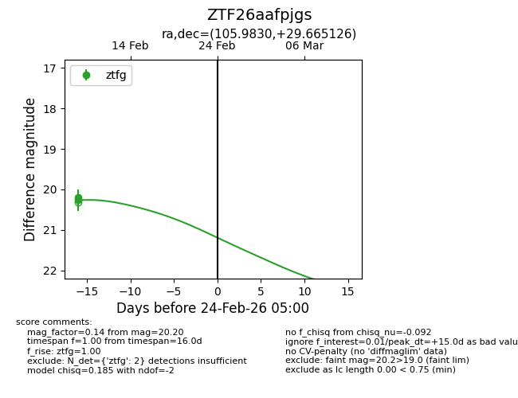
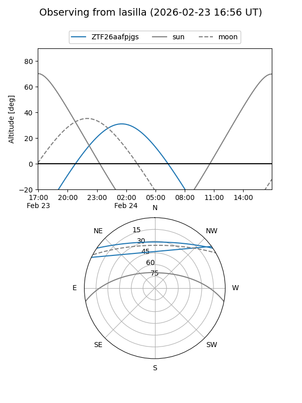
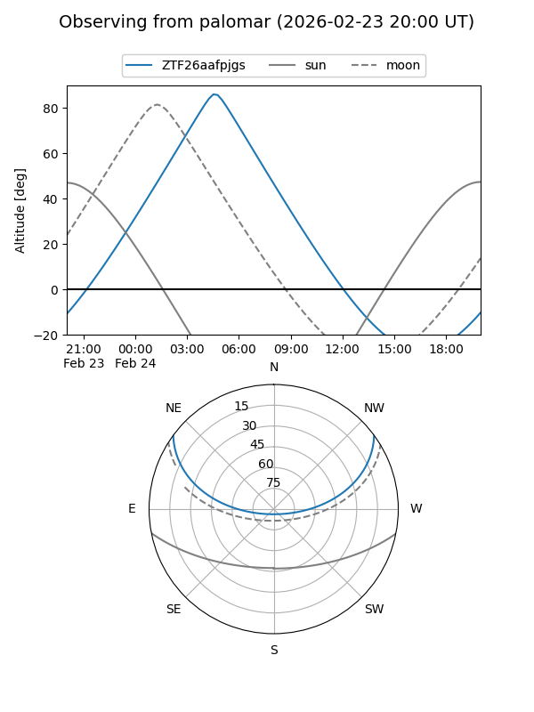

ZTF26aafpjgs
Target ZTF26aafpjgs at 2026-02-24 09:08
Aliases and brokers:
FINK: link
Lasair: link
ALeRCE: link
alt names
ZTF26aafpjgs (ztf,fink_ztf)
Coordinates:
equatorial (ra, dec) = 105.9830,+29.66513
equatorial (HMS+DMS) = 07:03:55.93,+29:39:54.45
galactic (l, b) = (187.1610,+15.53451)
Flags:
Photometry:
last ztfg=20.20
2 ztfg detections
Lightcurve

Visibility


Additional plots